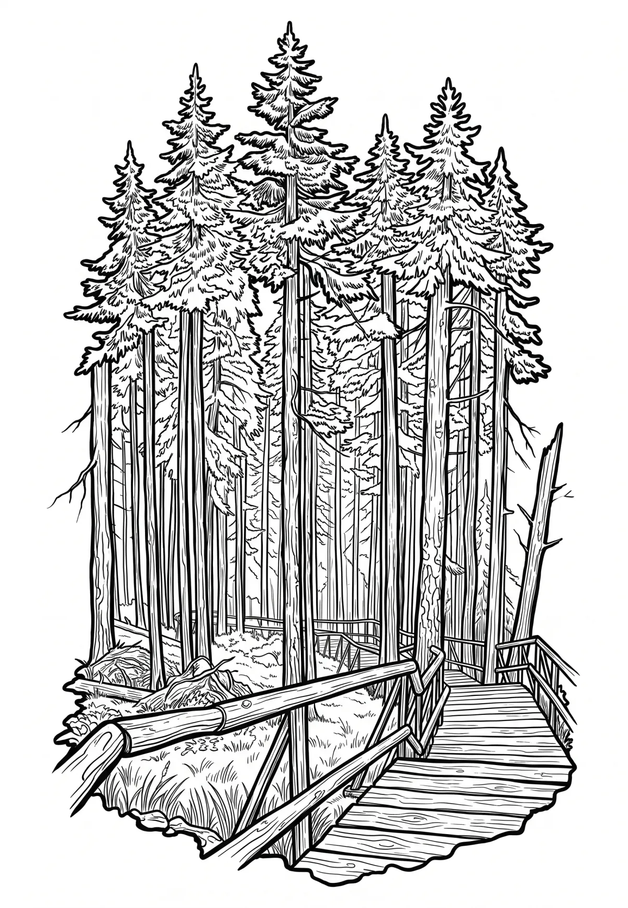

Boubínský prales
Jihočeský kraj · 1362 m n. m.

přírodní památka · #007
Boubínský prales je národní přírodní rezervace 3,5 kilometru severovýchodně od obce Zátoň v okrese Prachatice, která byla vyhlášena již v roce 1858. Jedná se tedy o třetí nejstarší českou přírodní rezervaci, a to o rozloze 666,41 ha. Oblast leží v CHKO Šumava a spravuje ji Správa NP a CHKO Šumava.